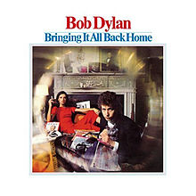

Bringing It All Back Home

Released: March 22, 1965
Length: 47:14
Producer: Tom Wilson
Label: Columbia
Side 1
- Subterranean Homesick Blues
- She Belongs to Me
- Maggie's Farm
- Love Minus Zero/No Limit
- Outlaw Blues
- On the Road Again
- Bob Dylan's 115th Dream
Side 2
- Mr. Tambourine Man
- Gates of Eden
- It's Alright, Ma (I'm Only Bleeding)
- It's All Over Now, Baby Blue